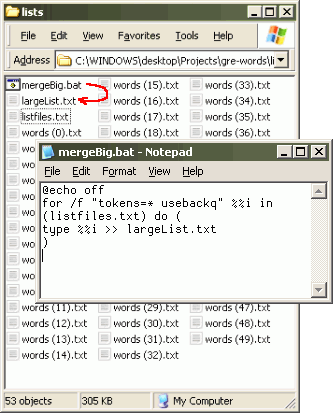

As it turns out, a friend of mine is beginning to study for the GRE to apply for grad school in about a year or so. One part of the test involves advanced English vocabulary. One night, knowing very well how I can never resist doing something new, he sent me a list of words to help process. Eventually, the conversation led me to ask him what he truly wanted done after all these words were compiled. Basically, it was a flashcard app that he could use to help familiarize himself with the definitions of various esoteric words.
The task appeared simple but as with most new things, you don't really know how to appreciate the details until they hit you face-first later on. To start, he sent me several lists of all the words that he needed to study for. These were from some kind of audio tape transcription, as they had times attached to them. After initial merging, filtering and sorting in Excel, I ended up with a master list of about 7500 words total.
 merge word lists into a single master list
After all these words were compiled, the next thing I needed was a full set of definitions for every one of the words in this list. I've never had to do anything quite like programmatically define 7500 words. But I did know that there were "reference API"s. However, after much searching, none of them really gave me what I was looking for without either having to wait for an API access key (the thing that allows the service to track how you use their data) or even worse, spend extra time to further translate between formats (especially XML -- this is the worst!).
Luckily, I stumbled across the dict.org repository of English reference data, which included the "WordNet 2.0" data set. That particular set had minimal formatting, the definitions were concise and included other stuff packed in like synonyms and antonyms; it was as perfect as I was going to get.
The definition page that this online dictionary spat out was ideal in terms of repurposing. All the
definitions were just raw text (with some links) enclosed in <pre> tags which I could easily
identify and pick out using some of my previously written Snaggletooth tools. A separate script
was used to automatically download all the definition pages for the undefined words in my master list.
I let it loose for about an hour gathering up roughly 6MB of definition text. This is the defineAll script that I
wrote to amass the 7500 definitions:
@echo off
for /f %%i in (wordlist.txt) do (
echo Defining %%i...
curl -s --data "Form=Dict1" --data "Strategy=*" --data "Query=%%i" --data "Database=wn" --data "submit=Submit query" "http://www.dict.org/bin/Dict" >def.txt
echo $-- >> defAll.txt
tf filters\find_def.txt def.txt >> defAll.txt
echo $++ >> defAll.txt
)
I used some special strings in between the entries to separate them so I could do some REPLACE-ALLs to sanitize the quotes and do other things to the definition text. My SnaggleTooth tools for text-processing were also used to clean the raw text into something more useful.
A special thing to note is that there are plenty of tools out there for pretty much any processing job you'd ever want done, if you were lazy enough to look for them. I was tempted to roll my own, but luckily I used NirSoft's HTML detagger tool instead to rip out the links in the definition for the synonyms; they didn't have meaning anymore after being compiled. That saved a lot of time.
After all the definitions were thoroughly processed and saved as an external Javascript database, I coded up the flashcard app to be as simple to use and clear as possible. Sadly, my friend had gone to bed by then but I just assumed the typical use-cases to come up with some basic features which anyone using a type of flashcard program would want to have: search, random card, history, groups of words by reference. Those ended up matching his intended needs.
Note: this app does not run in any version of IE, (until IE9, proportedly). It was new and fun for me to crawl the word data for the app. And hopefully, it'll also have solved his problem of studying for that part of the GRE. Good luck buddy!
The flashcards app.